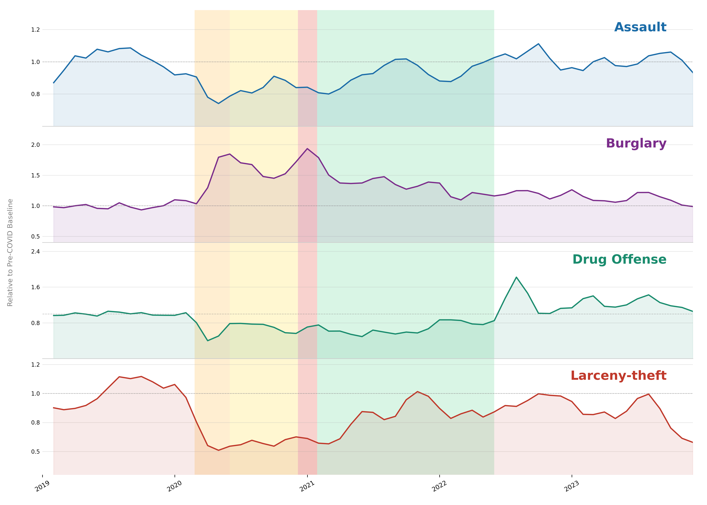

A city locked down
The first confirmed case of COVID-19 in the San Francisco Bay Area was recorded on January 31, 2020, marking the beginning of an unprecedented period for the city. Compared to other major US cities, San Francisco was swift and aggressive in its pandemic response. This included some of the earliest mandatory stay-at-home orders for citizens and business closures in the country. Despite having one of the highest population densities in the United States, the city recorded one of the lowest COVID-19 mortality rates nationally, which has been widely attributed to these response efforts.[1] While they proved effective in limiting the spread of the virus, they inevitably disrupted many aspects of daily life, particularly activities dependent on social interaction and public mobility. This is evident when analysing the city's crime data for the period, which reveals several interesting patterns.
Two decades of police records, made public
The city of San Francisco makes data from its Police Department publicly available on DataSF.[2] Two datasets, one covering the period 2003 to 2018 and the other from 2018 to present, are available on the portal. Together they span over two decades and provide a continuous record of reported crime incidents. The incident data includes timestamps, incident categories, descriptions and spatial information. Here, a set of four crime categories will be used to explore the crime patterns in San Francisco during the COVID-19 period. These are Assault, Burglary, Drug Offense and Larceny-theft.
Four crime categories, four different stories
Not all crime responds to a lockdown in the same way. The nature of each offense, and the social conditions that enable it, determines whether a stay-at-home order suppresses it or makes it worse. To make different crime categories comparable, each series below is expressed relative to its own pre-COVID baseline: a value of 1.0 means the month is exactly as busy as the typical pre-pandemic month for that crime, while values below 1.0 represent a drop and values above 1.0 a rise.
The chart spans 2019 through 2023, with the pre-COVID year serving as an anchor. Four distinct phases of San Francisco's pandemic response are highlighted in the background, reflecting the shifting restrictions the city imposed and gradually lifted over that period.

Figure 1 · Four crimes, four responses to lockdown. Each panel shows monthly incident counts for one crime category, smoothed with a two-month rolling average and normalised so that 1.0 equals the average pre-COVID monthly count (baseline: January 2018 – February 2020). The dashed grey line marks that baseline. Coloured background bands indicate the four main phases of San Francisco's pandemic response. Note that the y-axis scale differs between panels to best reveal each category's individual variation.
The four panels tell strikingly different stories. Assault falls sharply at the onset of restrictions, a pattern consistent with the near-total elimination of nightlife, bar crowds and the social friction that typically drives violence. The drop is immediate and steep, bottoming out during the Initial Restrictions phase before recovering gradually as the city reopened.
Burglary seems to be the most affected by the pandemic out the four categories. During the first lockdown period a significant rise in burglaries is noticeable, then after a very slight decrease during the Partial Reopening period burglaries peak during the second lockdown period. While some forms of burglary declined, others appear to have risen, particularly commercial burglary of shuttered businesses, which became targets precisely because they were vacant and unmonitored.
Drug Offense shows a great decline, falling well below its pre-COVID baseline and remaining depressed throughout the entire study period. This likely reflects both reduced police enforcement activity during the pandemic and a longer-term shift in drug policy, with the effects of cannabis legalisation continuing to reduce recorded offenses.
Larceny-theft, the city's highest-volume crime in normal times, also collapses early in 2020, reflecting the emptying of commercial streets, transit hubs and tourist areas that this opportunistic crime depends on. Its recovery closely tracks the return of foot traffic to downtown San Francisco.
Since Burglary showed the most dramatic response to the pandemic, it will be the focus of the next section, where we will explore how its patterns varied across different neighbourhoods in the city.
Burglaries increased during the pandemic, but some areas felt it more than others
The city-wide trends shown above mask considerable geographic variation. San Francisco's neighbourhoods are socioeconomically diverse, and their relationship to the pandemic restrictions was far from uniform. The map below focuses on Burglary, the category that showed the most geographically uneven response to COVID restrictions, and compares incident density during the pandemic period against the pre-COVID baseline. Red areas saw an increase in burglary relative to the baseline while blue areas saw a decrease. The pattern reflects not just where people were absent, but where buildings became vulnerable.
Figure 2 · Burglary change during COVID-19 relative to pre-pandemic baseline. The map shows the spatial distribution of the change in burglary incidents across San Francisco. Red tones indicate areas where burglary increased relative to the pre-COVID baseline, blue tones indicate areas where it decreased. By clicking the button in the top-right corner it is possible to view just the increasing or decreasing areas, and by zooming in on specific neighbourhoods you can see the patterns more clearly.
The map reveals that the increase in burglaries was not uniform across the city. Certain neighbourhoods, particularly those with a high concentration of commercial properties or tourist attractions, experienced a more pronounced rise in burglary incidents. A few areas experienced a decrease, most notably around the Tenderloin district, which is the district with the highest crime rate out of all districts. It is likely that Tenderloin just had reduced overall crime due to decreased foot traffic and increased police presence, this will be further examined in the following section.
Not all districts tell the same story
The map in Section 2 suggested that the burglary increase during COVID was not uniformly distributed around the city, but burglary was not the only crime affected. Even though the city-wide trends for Assault, Drug Offense and Larceny-theft were less dramatic than Burglary, they also showed some geographic variation. Some districts saw a sharper drop in Assault than others, some had a more pronounced decline in Drug Offense, and the recovery of Larceny-theft was faster in some areas than others.
The chart below allows you to break down the percentage change in each of the four crime categories by police district, and to compare how those patterns shifted across the four phases of the pandemic response. Use the dropdown to select a crime category and phase combination. Bars extending to the right in red indicate an increase relative to the pre-COVID baseline and bars extending left in blue indicate a decrease.
Figure 3 · Crime change by district during COVID-19. The plot shows the percentage change in each crime category across different districts in San Francisco during the pandemic. Users can select a specific crime category and time period to view its distribution across districts.
The pandemic did not reduce crime, it rearranged it
The three analyses above tell a coherent story. When San Francisco locked down in early 2020, it effectively suspended the social conditions that make certain crimes possible. Assault and Larceny-theft, both dependent on people being out in public, collapsed almost immediately. They are, in that sense, crimes of proximity, removing the crowds reduces the crimes.
Drug Offense can also be seen as a crime of proximity, and drops in Drug Offense were seen in all districts over the course of the pandemic. The pandemic reduced the opportunities for drug transactions to occur in public spaces, and the data suggests that this effect was both immediate and sustained. The decline in recorded Drug Offenses may also reflect changes in policing priorities during the pandemic, with law enforcement agencies potentially diverting resources away from drug enforcement to focus on public health measures and other pressing concerns.
Burglary tells a different story. Empty offices, shuttered restaurants and unmonitored retail units created a different kind of opportunity, and the data shows that certain districts, particularly those dominated by commercial real estate, bore the brunt of that shift.
Taken together, the picture is of a city whose crime landscape was not simply quieted by the pandemic but fundamentally reshaped by it. Some of those reshapings proved temporary, Assault and Larceny-theft have largely tracked the return of normal urban life, others appear more durable. San Francisco's streets look different today than they did in 2019, and the data suggests the pandemic was less a pause than an accelerant for changes already underway.
A note on limitations: reported crime statistics reflect both actual criminal behaviour and policing activity, which itself shifted considerably during COVID-19. Reduced patrol intensity, court backlogs and changes in public willingness to report incidents may all have influenced the numbers independently of true incident rates. The patterns described here are consistent and meaningful, but the full picture of what happened on San Francisco's streets during the pandemic is richer and messier than any dataset alone can capture.
References & Further Reading
- Kious, B. M. et al. (2021). San Francisco's COVID-19 response. The Lancet Regional Health — Americas. See also: San Francisco Department of Public Health reports at sfdph.org.
- San Francisco Police Department (2024). Incident Reports 2018–Present and Incident Reports 2003–2017. DataSF Open Data Portal.
- Segel, E. & Heer, J. (2010). Narrative Visualization: Telling Stories with Data. IEEE Transactions on Visualization and Computer Graphics, 16(6), 1139–1148.